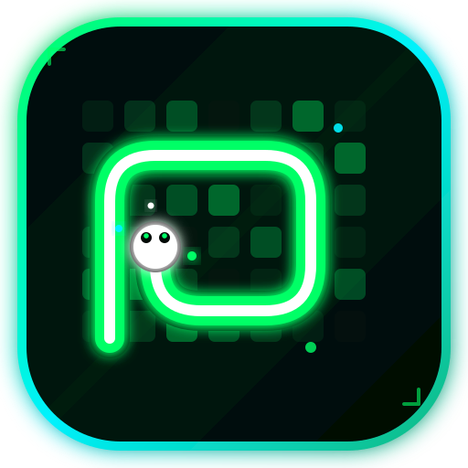

GITHUB_SNAKE.EXE v2.0 PRO
Zero-Flicker 60 FPS Sub-pixel Contribution Engine & Game
Ingresa un nombre de usuario o pega el enlace completo de GitHub:
Accesos directos:
Linus Torvalds
@torvaldsCreador de Linux & Git
Progreso de Devoracion del Mapa:
0%
Commits Restantes
0
P1 (IA Verde) Puntos
0 pts
P2 (Jugador Cian) Puntos
0 pts
Estado de la Partida
Escaneando red...
Renderizado Zero-Flicker a 60 FPS
Calcula la posicion de sub-pixel mediante interpolacion lineal continua (LERP) entre ticks discretos, eliminando cualquier vibracion o salto abrupto en la pantalla.
Pathfinding BFS + Lookahead
Ejecuta un arbol de busqueda en anchura que localiza los commits mas ricos energeticamente mientras utiliza un algoritmo de Flood Fill de seguridad para jamas quedar atrapada.
Sincronizacion con GitHub API
Parsea la matriz de 53 semanas x 7 dias en tiempo real y reacciona dinamicamente disipando la intensidad de cada commit devorado con particulas cuanticas.